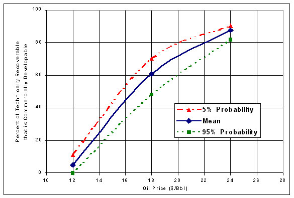

Figure 8. Technically Recoverable and Commercially Developable Oil at 95 Percent, Mean, and 5 Percent Probabilities for Given Oil Prices as a Percentage of Technically Recoverable Oil for the ANWR 1002 Area of the Alaska North Slope |
|  |
Source: United States Geological Survey, "Economics of Undiscovered Oil in the 1002 Area of the Arctic National Wildlife Refuge," 1998. |
Return to 2. Analysis Discussion.